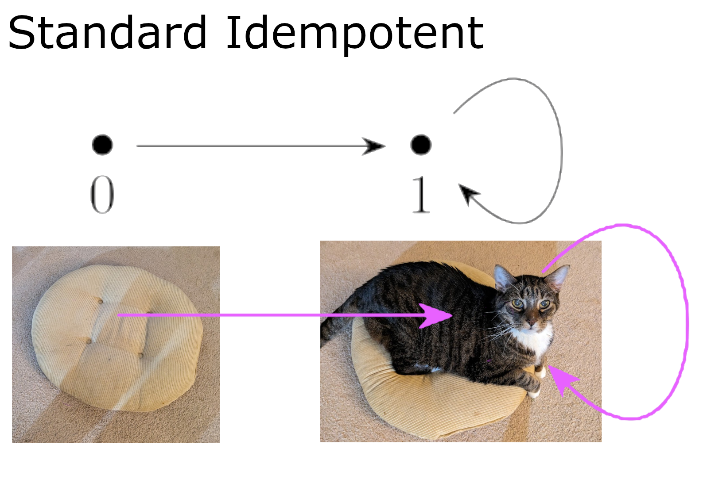

... \(X^{\circlearrowright \alpha}\) above to \(Y^{\circlearrowright \beta}\) above...
Before we begin, I want to preface this with an additional spoiler. I got really stuck at 12/14 maps. If you’re stuck there also, I’d encourage you to take a break from it. I know I needed it.
Solution.
Let’s begin with some diagrams of our endomaps:
I’m going to try to adhere to the text as closely as I can for now. Thus, \(X^{\circlearrowright \alpha}\) has been labeled using it’s presentation already with the generators given as \(\{a,b,c,d\}\text{.}\) Our presention includes following 4 relations:
- \(\displaystyle \alpha^5 a = \alpha^2 a\)
- \(\displaystyle \alpha^2 a = \alpha b\)
- \(\displaystyle \alpha^3 a = \alpha c\)
- \(\displaystyle \alpha^2 d = d\)
We’re looking for maps \(f\) for which these generators from \(X\) get assigned to points in \(Y\) such that \((f \circ \alpha)(x) = (\beta \circ f)(x)\) for every \(x \in X\text{.}\) For now, we’re not sure what assignments will make that happen so we’ll just call these mystery points \(f(a) = \bar{a}\text{,}\) \(f(b) = \bar{b}\text{,}\) \(f(c) = \bar{c}\text{,}\) and \(f(d) = \bar{d}\text{.}\) Since we established that \(f \alpha^n = \beta^n f\) for all \(n \in \mathbb{N}\text{,}\) we can match each of our relations on \(X\) with a corresponding relation on \(Y\text{:}\)
- \(\displaystyle \beta^5 \bar{a} = \beta^2 \bar{a}\)
- \(\displaystyle \beta^2 \bar{a} = \beta \bar{b}\)
- \(\displaystyle \beta^3 \bar{a} = \beta \bar{c}\)
- \(\displaystyle \beta^2 \bar{d} = \bar{d}\)
Beginning with the generator \(\bar{a}\text{,}\) we’re going to look for a list potential points in \(Y\) that satisfy our first relation: \(\beta^5 \bar{a} = \beta^2 \bar{a}\text{.}\) The textbook helps us out by pointing out that \(w,x,y,z\) meet this condition but \(l,m,p,q,r,s,t,u,v\) do not. Thus, we can make four possible assignments for \(a\text{:}\) \(\{\bar{a} \rightarrow w, \bar{a} \rightarrow x,
\bar{a} \rightarrow y, \bar{a} \rightarrow z\}\text{.}\)
If we assign \(\bar{a} \rightarrow w\text{,}\) we can apply the operator \(\beta\) until we form a loop. If we do so, we find that \(\beta \bar{a} = \beta w = x\text{,}\) \(\beta^2 \bar{a} = \beta x = y\text{,}\) and \(\beta^3 \bar{a} = \beta y = w\text{.}\) Our second relation implies that \(\beta^2 \bar{a} = \beta \bar{b}\text{,}\) but we already know \(\beta^2 \bar{a} = y\) so that means that whatever we choose for \(\bar{b}\) must satisfy \(\beta \bar{b} = y\text{.}\) In the diagram, the only arrows leading into point \(y\) are the arrows originating at \(x, z\text{.}\) Thus our only valid assignments for \(\bar{b}\text{,}\) given \(\bar{a} \rightarrow w\text{,}\) are \(\bar{b} \rightarrow x\) and \(\bar{b} \rightarrow z\text{.}\)
Given these two choices of \(\bar{b}\text{,}\) we can start to narrow down our choices of \(\bar{c}\) as well. If we assume that \(\beta^3 \bar{a} = w = \beta \bar{c}\) implies that \(\bar{c}\) must have an arrow leading to point \(w\text{.}\) Presicely one point has that property, namely \(y\text{.}\)
Our final relation specifies that \(m>\beta^2 \bar{d} = \bar{d}\text{,}\) and there’s only one 2-cycle in \(Y\) that could satisfy this. This means that \(\bar{d}\) needs to be either \(l\) or \(m\text{.}\) Having exhausted all possibilities for maps such that \(\bar{a} \rightarrow w\text{,}\) we’re currently sitting on a list of 4 maps: \([\bar{a} \rightarrow w, \bar{b} \rightarrow x,
\bar{c} \rightarrow y, \bar{d} \rightarrow l]\text{,}\) \([\bar{a} \rightarrow w, \bar{b} \rightarrow z,
\bar{c} \rightarrow y, \bar{d} \rightarrow l]\text{,}\) \([\bar{a} \rightarrow w, \bar{b} \rightarrow x,
\bar{c} \rightarrow y, \bar{d} \rightarrow m]\text{,}\) \([\bar{a} \rightarrow w, \bar{b} \rightarrow z,
\bar{c} \rightarrow y, \bar{d} \rightarrow m]\text{,}\)
Moving on, our next possible assignment is \(\bar{a} \rightarrow x\text{.}\) Iterating from there gives us the following: \(\beta \bar{a} = \beta x = y\text{,}\) \(\beta^2 \bar{a} = \beta y = w\text{,}\) and \(\beta^3 \bar{a} = \beta w = x\text{.}\)
As before, our second relation limits our choice of \(\bar{b}\text{.}\) Knowing \(\beta^2 \bar{a} = w = \beta \bar{b}\) tell us that there must be an arrow from \(\bar{b}\) to \(w\text{,}\) and the only arrow with a target of \(w\) is the one originating at point \(y\text{.}\) Thus, \(\bar{a} = w \implies \bar{b} = y\text{.}\)
Testing our third relation places limits on \(\bar{c}\text{.}\) Since \(\beta^3 \bar{a} = x = \beta \bar{c}\text{,}\) the needs to be an arrow from point \(\bar{c}\) to \(x\) and this is uniquely satisfied by point \(w\text{.}\)
Our choices for \(\bar{d}\) are still independent of our choices for \(\bar{a},\bar{b},\bar{c}\text{,}\) specifically \(\bar{d} = \{l,m\}\text{.}\) This gives us two new maps, \([\bar{a} \rightarrow x, \bar{b} \rightarrow y,
\bar{c} \rightarrow w, \bar{d} \rightarrow l]\) and \([\bar{a} \rightarrow x, \bar{b} \rightarrow y,
\bar{c} \rightarrow w, \bar{d} \rightarrow m]\text{,}\) bringing our running total of maps to 6.
Our third option for \(\bar{a}\) is \(y\text{.}\) If we assign \(\bar{a} \rightarrow y\text{,}\) it follows that \(\beta \bar{a} = \beta y = w\text{,}\) \(\beta^2 \bar{a} = \beta w = x\text{,}\) and \(\beta^3 \bar{a} = \beta x = y\text{.}\) Since \(\beta^2 \bar{a} = x = \beta \bar{b}\text{,}\) it follows that \(\bar{b}\) must be \(w\) because there’s only one arrow leading into \(x\text{.}\) With our third relation telling us \(\beta^3 \bar{a} = y = \beta \bar{c}\text{,}\) that tells us that our choice of \(\bar{c}\) must have an arrow leading to \(y\text{.}\) Two such points satisfy this, namely \(x,z\text{.}\) For each of those choices of \(\bar{c}\text{,}\) there are still two independent choices for \(\bar{d}\text{.}\) This gives us a total of 4 maps with \(\bar{a} \rightarrow y\) bringing our running total to 10. Specifically, our new maps are \([\bar{a} \rightarrow y, \bar{b} \rightarrow w,
\bar{c} \rightarrow x, \bar{d} \rightarrow l]\text{,}\) \([\bar{a} \rightarrow y, \bar{b} \rightarrow w,
\bar{c} \rightarrow z, \bar{d} \rightarrow l]\text{,}\) \([\bar{a} \rightarrow y, \bar{b} \rightarrow w,
\bar{c} \rightarrow x, \bar{d} \rightarrow m]\text{,}\) and \([\bar{a} \rightarrow y, \bar{b} \rightarrow w,
\bar{c} \rightarrow x, \bar{d} \rightarrow m]\text{.}\)
Our final choice for \(\bar{a}\) is \(z\text{.}\) Going through our algorithm again, we start be iterating to get \(\beta \bar{a} = \beta z = y\text{,}\) \(\beta^2 \bar{a} = \beta y = w\text{,}\) and \(\beta^3 \bar{a} = \beta w = x\text{.}\) Our \(\bar{b}\) must satisfy \(\beta^2 \bar{a} = w = \beta \bar{b}\text{,}\) so the only choice is \(\bar{b} \rightarrow y\text{.}\) Our \(\bar{c}\) must satisfy \(\beta^3 \bar{a} = x = \beta \bar{c}\text{,}\) so the only choice is \(\bar{c} \rightarrow w\text{.}\) Once again, our choice of \(\bar{d}\) is still independent with two options of \(m,l\text{.}\) These two maps, \([\bar{a} \rightarrow z, \bar{b} \rightarrow y,
\bar{c} \rightarrow w, \bar{d} \rightarrow l]\) and \([\bar{a} \rightarrow z, \bar{b} \rightarrow y,
\bar{c} \rightarrow w, \bar{d} \rightarrow m]\text{,}\) bring our running total to 12.
And.... this is where I got stuck. I mean, really stuck.
After going through this algorithm 3 times and getting the same 12 maps, I decided to double check my work using Python. Both my implementation of the described algorithm and my exhaustive search both only found the same 12 maps seen here.
Once I kind of a way of quickly testing arbitrary maps for structure preservation, I was able to speed up my testing of different hypotheses about where my missing two maps could be. After several hours of unsuccessfully scouring the Internets for answers, I decided it was time for a break and cracked open a beer.
Yeah, I know that’s not what you’d expect the solution to a math problem to be. But that’s precisely what I needed at the time.
That beer was to my hand what the pillow was to Alphonse in Last week’s #Caturday post:

I think that I was so wrapped up in my own version of the problem. I wasn’t actually reading what the authors said. The text does not state there are 14 maps, it was just "heavily implied".
This question is starting to feel self-referential in a way I hadn’t been expecting. My current line of thinking is authors’ use of the pronoun "I" instead of "we" here is done with intention, and that my two missing maps are somehow related to the way the "null map" and the "identity map" were handled in the bookkeeping rules of the broader category.
I think I’m going to let this stew for while to see if I can come up with a better solution that answers this and Exercise 9 simultaneously.
Stay tuned.